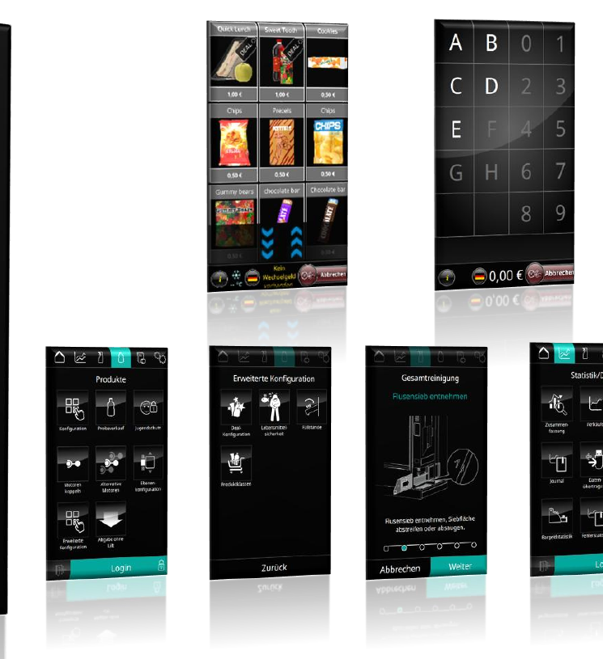
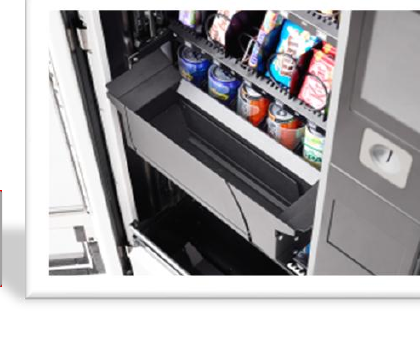
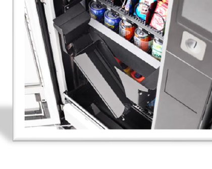

Nabiał, jaja, butelki i produkty paczkowane
Najważniejsza rodzina dla sprzedaży bezpośredniej: produkty świeże, butelki, soki, jogurty, sery, masło, przetwory i gotowe zestawy w jednym punkcie 24/7.
Automaty Sielaff
BRUNIMAT odpowiada za świeże mleko, a Sielaff daje szerszą gamę automatów do produktów dodatkowych: od wariantów chłodniczych i combi, przez napoje, hot drinks i układy outdoor, po rozwiązania zwrotne. Dobieramy automat do realnego asortymentu rolnika, miejsca ustawienia i sposobu obsługi punktu.
Dla kogo
Automaty Sielaff mają sens tam, gdzie gospodarstwo prowadzi lub chce zacząć sprzedaż bezpośrednią i ma produkty dodatkowe. Można dobrać układ pod produkty stojące albo leżące, produkty chłodzone, napoje, butelki, zestawy, produkty paczkowane albo zwroty opakowań, a punkt sprzedaży działa bez stałej obsługi przy każdej transakcji.

Zakres Sielaff
Na stronie pokazujemy głównie wariant chłodniczy, bo najczęściej pasuje do gospodarstw z nabiałem, jajami i produktami świeżymi. W praktyce Sielaff ma znacznie szerszą ofertę, dlatego przy rozmowie dobieramy rodzinę automatów pod konkretny asortyment, opakowania, temperaturę, miejsce ustawienia i plan sprzedaży.
Najważniejsza rodzina dla sprzedaży bezpośredniej: produkty świeże, butelki, soki, jogurty, sery, masło, przetwory i gotowe zestawy w jednym punkcie 24/7.
Warianty pod produkty wymagające kontrolowanej temperatury i ostrożnego wydania: sery, jogurty, masło, dania gotowe, produkty w pudełkach i opakowania delikatne.
Dobre rozszerzenie punktu, jeśli gospodarstwo ma większy ruch albo chce sprzedawać soki, napoje, wodę, kefiry lub produkty w butelkach i puszkach.
Rozwiązania do ustawienia w pawilonie lub na zewnątrz, z zabezpieczoną elektroniką, ochroną przed bryzgami, ochroną antywłamaniową i opcjami pracy całorocznej.
Opcja przy większym ruchu: punkt przy gospodarstwie może sprzedawać nie tylko produkty na wynos, ale też prosty napój dla klientów w trasie.
Rozwiązania reverse vending mogą wspierać system zwrotów i powtarzalnych zakupów, jeśli gospodarstwo chce budować stały obieg butelek lub opakowań.



Jak pomaga w sprzedaży
To uzupełnienie pawilonu i mlekomatu dla gospodarstw, które chcą sprzedawać szerzej niż samo mleko: bez rozbudowy obsługi i bez konieczności otwierania sklepu tylko po jedną paczkę sera czy butelkę.
Klient może kupić produkty także wieczorem, rano lub w niedzielę, bez umawiania odbioru i bez obsługi przy ladzie.
Dostępne są warianty do ustawienia wewnątrz oraz rozwiązania zewnętrzne z zabezpieczeniem elektroniki, ochroną przed bryzgami i funkcją ochrony przed mrozem.
Osoba, która przyjechała po mleko, może dobrać coś więcej: ser, jaja, jogurt, masło albo butelkę na kolejne zakupy.
Opowiedz nam, co chcesz sprzedawać i gdzie ma stać punkt. Dobierzemy rozwiązanie do gospodarstwa, zamiast wciskać urządzenie na siłę.